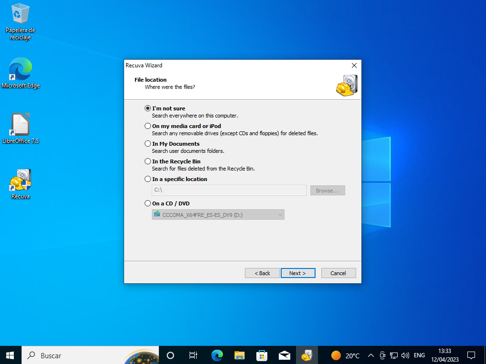

Aquí hay menos opciones ya que la mayoría son de pago o van cargados de adware, así que prácticamente me he visto obligado a preelegir entre estos dos:
TestDisk y Recuva. TestDisk es una utilidad con interfaz de consola que también está disponible en linux. Es más complicado de usar que Recuva, pero permite hacer muchas más cosas. Sin embargo, Recuva es la opción más difundida y más elegida por los usuarios.
Para resumir la comparación:
| PROGRAMA DE RECUPERACIÓN | RECUVA | TESTDISK |
|---|---|---|
| Pros |
|
|
| Contras |
|
|
Para descargar recuva primero nos dirigiremos a la página web de Recuva y elegimos Descargar versión gratuita (o Download Free Version), tras lo que nos llevará a otra página donde nos ofrecerá comprarlo, así volvemos a clickar en Descargar (Download) en la parte correspondiente a la versión gratuita. Aún así son insistentes y nos llevarán a una segunda página con los mismos argumentos y ofertas presentados de otra forma, así que volvemos a elegir Descargar en la sección correspondiente a la versión gratuita.
Una ver descargado abrimos el ejecutable desde la carpeta de Descargas o el historial de descargas del navegador. Nos pedirá los permisos para hacer cambios en el disco y damos a que sí o de lo contrario no se podrá instalar.

La instalación es bien sencilla. Podemos dar a INSTALL para realizar una instalación típica o a Customize para que nos customizar la elección. En el primer caso la instalación comienza y en el segundo nos pregunta si queremos un acceso directo y poco más, tras lo que la instalación también comenzará.
Tras la instalación nos dará la opción de arrancar Recuva. Si no vamos a usarlo ahora lo desmarcamos.
Para ilustrar como usar recuva voy a poner un ejemplo de uso. Es realmente simple y muy guiado. Una vez abierto nos saldrá el asistente de Recuva que nos guiará en todos los pasos de manera muy sencilla. Clickamos en siguiente y ahora nos preguntará qué tipo de archivo queremos recuperar. En este caso voy a seleccionar all files para que recupere todos los tipos de archivos.
Seleccionamos dónde queremos realizar la operación. Con I'm not sure buscará en todo el ordenador, de la misma forma que si usamos. Realmente todas las opciones son casos específicos comunes que podemos especificar con la penúltima y última opción. En este caso voy a seleccionar no estoy seguro para que compruebe todo el ordenador.
Ahora está todo listo. Podemos darle a Start para comenzar la operación o a Back para cambiar alguna opción. Si marcamos Deep Scan realizará un análisis más profundo pero lento. Yo voy pulsar siguiente sin más, tras lo cual comenzará la recuperación.
Primero, iremos a la página web de TestDisk en la sección de Descargas (Downloads) y clickamos en Windows 64-bit en el cuerpo del texto. NO CONFUNDIR CON EL BOTON GRANDE VERDE PARA DESCARGAR SU VERSIÓN DE LINUX.
El archivo que nos descarga está comprimido, así que lo descomprimimos en donde prefiramos.
Nos metemos dentro de la subcarpeta dentro de la descompresión y ejecutamos testdisk_win. El programa es portable, lo que significa que no hay que hacer más pasos, tan solo ejecutar el archivo mencionado. Puedes ver más información sobre los programas portables aquí.
El uso de TestDisk es complejo, por lo que recomiendo leer la guía que figura en su web aquí vinculada. Si bien lo he usado para recuperar unidades USB, el proceso se me complicó y no lo tengo documentado.